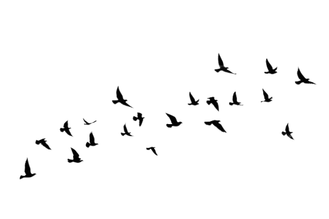
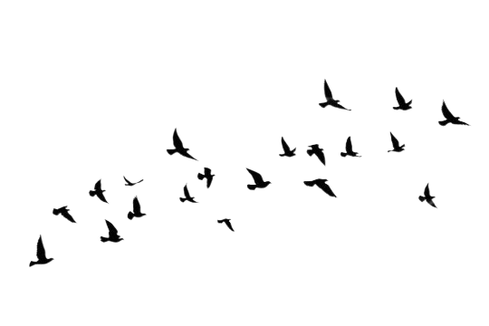

Land Pollution
The Silent Threat: Land Pollution
Land pollution, the insidious degradation of our precious soil and land surfaces, is
often
overshadowed by its air and water counterparts. But its impact is no less
significant.
It
refers to the introduction of harmful materials into the land, disrupting its
natural
equilibrium and causing a cascade of negative effects on our planet.